Cisco Packet Tracer est un simulateur réseau visuel et puissant distribué gratuitement par la Cisco Networking Academy (+15 millions d'étudiants déjà inscrits dans le monde !).
Sur votre poste Windows, appuyez sur les touches Windows + R, saisissez cmd puis appuyez sur Entrée.
Packet Tracer numérote automatiquement chaque appareil ajouté : PC7, Switch3, Router1… Ce numéro dépend simplement du nombre d'appareils déjà créés depuis l'ouverture du logiciel. Vos numéros seront différents des miens, et c'est parfaitement normal.
Fiez-vous toujours à l'adresse IP et à la position dans la topologie — jamais au nom affiché. Correspondance dans ce guide :
PC7, PC8, PC9 = les trois postes du Réseau A (192.168.1.10 à 192.168.1.12). Celui qui porte 192.168.1.10 est le PC1 de l'énoncé.PC10, PC11 = les deux postes du Réseau B (192.168.2.10 et 192.168.2.11), soit PC4 et PC5.Switch3 = Switch 1 (Réseau A) · Switch4 = Switch 2 (Réseau B) · Router1 ou Router3 = le Routeur.Attention aussi à l'orientation : dans les captures, le Réseau A apparaît à droite et le Réseau B à gauche. La position à l'écran n'a aucune importance — seul l'adressage compte. Vous pouvez renommer un appareil en cliquant sur son nom, sous l'icône.
PC1, PC2, PC3) dans la zone de travail.
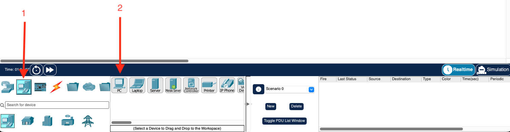
Switch 1.
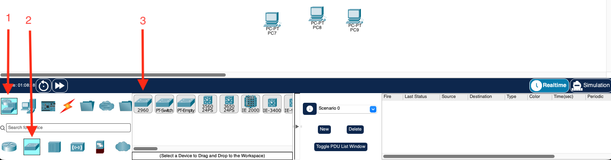
Un Switch sert à interconnecter des machines appartenant à un même réseau local (LAN). Il apprend dynamiquement les adresses MAC des appareils connectés à ses ports et distribue intelligemment les messages uniquement vers le bon destinataire local.
Switch 1 un par un (cliquez sur le PC, puis sur le Switch).
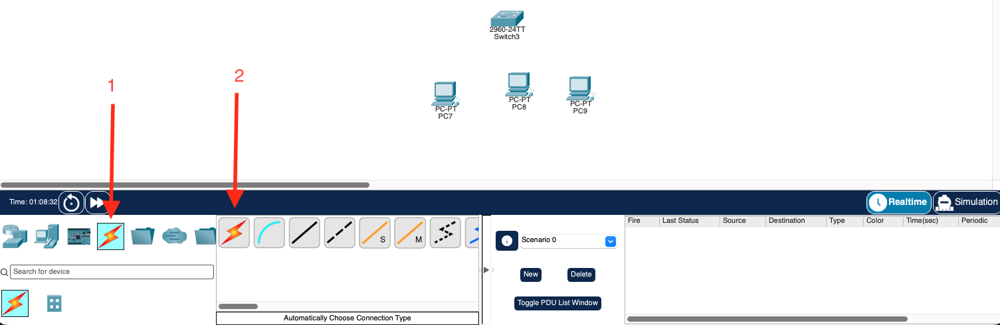
PC1).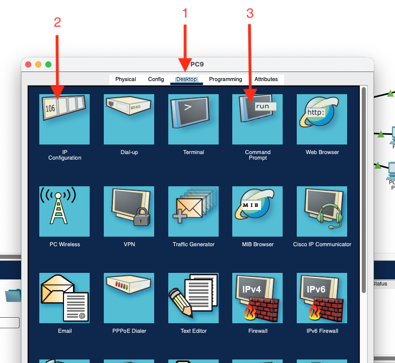
192.168.1.10255.255.255.0.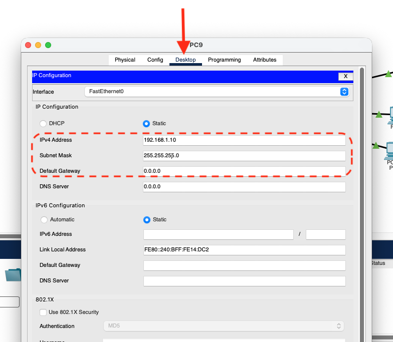
PC2 : IP 192.168.1.11 | Masque 255.255.255.0PC3 : IP 192.168.1.12 | Masque 255.255.255.0PC1 (192.168.1.10).PC2 :
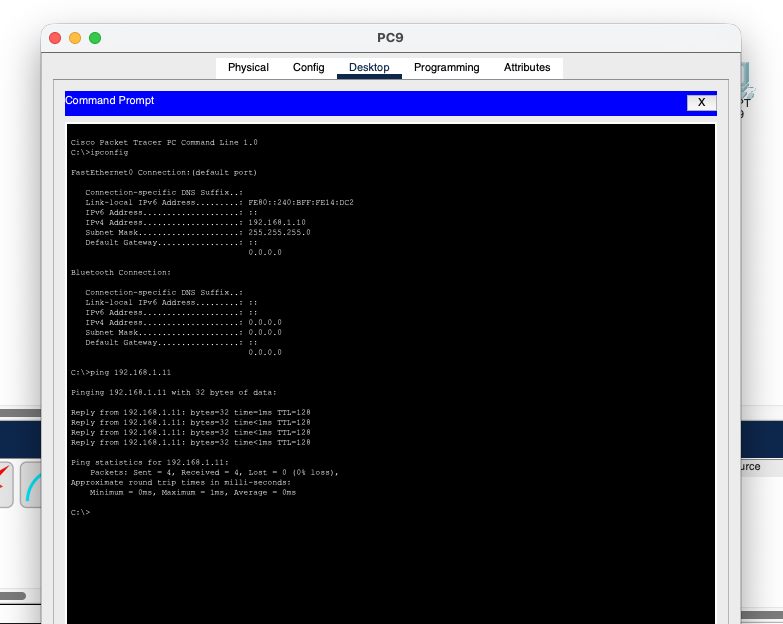
PC1 : 192.168.1.10PC2 : 192.168.1.11PC3 : 192.168.1.12PC4 : 192.168.2.10PC5 : 192.168.2.11Switch 2) et 2 nouveaux PC (PC4 et PC5).Switch 2 avec l'éclair orange.PC4 : IP 192.168.2.10 | Masque 255.255.255.0PC5 : IP 192.168.2.11 | Masque 255.255.255.0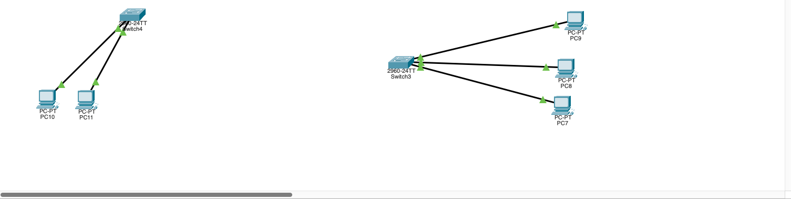
Contrairement au Switch qui travaille uniquement à l'intérieur d'un même réseau, le Routeur possède des interfaces dans plusieurs réseaux distincts. Son rôle est de transférer les paquets de données d'un réseau IP vers un autre. L'adresse IP du routeur dans votre sous-réseau est ce qu'on appelle la passerelle par défaut (Default Gateway).
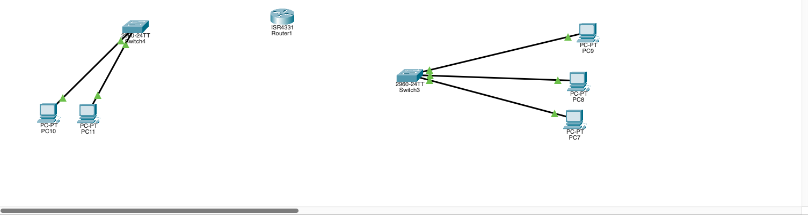
GigabitEthernet0/0/0).GigabitEthernet0/0/1).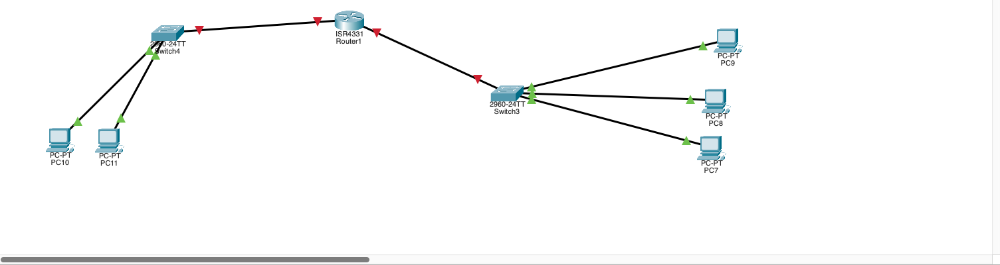
192.168.1.1, Masque 255.255.255.0, et cochez Port Status : On.
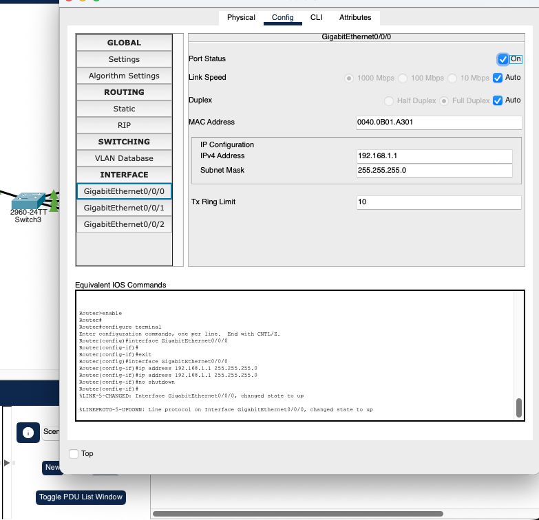
192.168.2.1, Masque 255.255.255.0, et cochez Port Status : On.
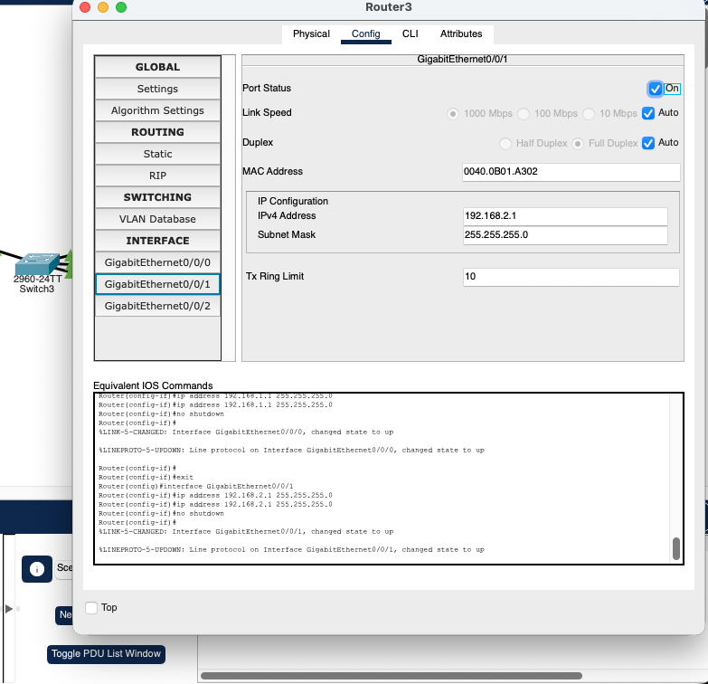
PC1, PC2, PC3).192.168.1.1.
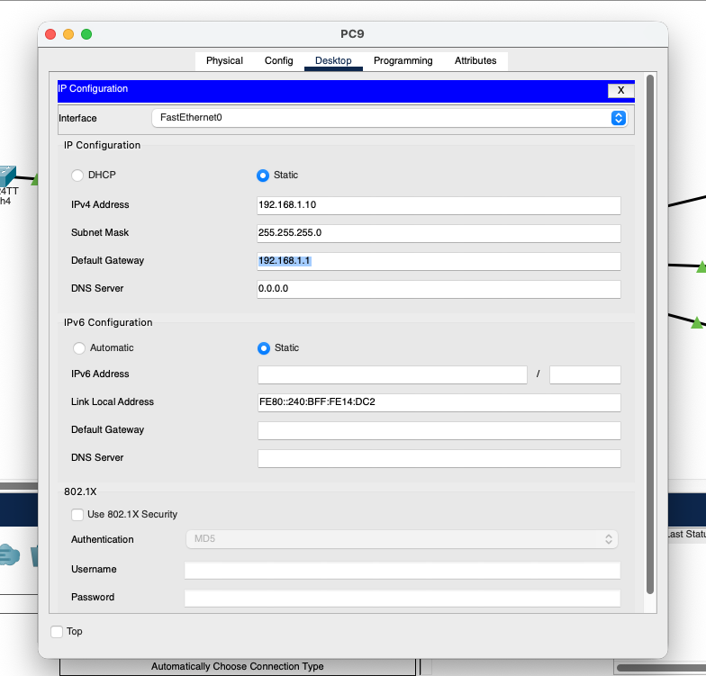
PC4, PC5) avec l'adresse côté droit : 192.168.2.1.PC1 (192.168.1.10).PC4 du Réseau B : ping 192.168.2.10
Vous venez de faire communiquer deux réseaux. Vérifions maintenant ce qui rendait cette communication possible.
PC1 (192.168.1.10), retournez dans IP Configuration et effacez l'adresse de la Default Gateway (remettez-la à 0.0.0.0). Ne touchez à rien d'autre : l'adresse IP, le masque et les câbles restent exactement les mêmes.PC4, qui se trouve dans l'autre réseau :
Destination host unreachable.
PC2, qui est dans votre propre réseau :
192.168.1.1 sur PC1 et vérifiez que le ping vers PC4 repasse.Ce qu'il faut comprendre : sans l'adresse de sa passerelle, le poste ne sait pas à qui remettre un paquet destiné à un autre réseau — il ne l'envoie même pas sur le câble. En revanche, les machines de son propre réseau restent parfaitement joignables. La passerelle ne sert qu'à sortir du réseau local.